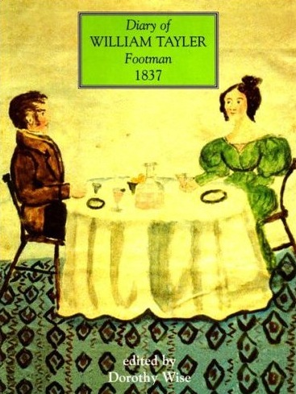

Tuesday, January the 29th, 2013
back to: title, date or indexes
The diary of William Tayler, footman, on this day in 1837:

Had a Lady to dinner here today. The Lady's maid is taken very sick today: I sopose she has been eating too much or something of the kind. But she is very subject to sickness. Last summer, when we were coming home from Canterbury, she actually spewed all the way, a distance of sixty miles and not less time than eight hours. The people stared as we passed through the towns and villages as she couldent stop even then. It amused me very much to see how the country people stood stareing with their mouthes half open and half shut to see her pumping over the side of the carriage and me sitting by, quite unconserned, gnawing a piece of cake or some sandwiches or something or other, as her sickness did not spoil my apatite. It was very bad for her but I couldent do her any good as it was the motion of the carriage that caused her illness. I gave her something to drink every time we changed horses but no sooner than it was down it came up again, and so the road from Canterbury to London was pretty well perfumed with Brandy, Rum, Shrub, wine and such stuff. She very soon recovered after she got home and was all the better for it after. It's eleven o'clock. My fire is out and I am off to bed.
Hooting Yard on the Air, March the 19th, 2015 : “Hiking Pickle Revisited” (starts around 25:25)